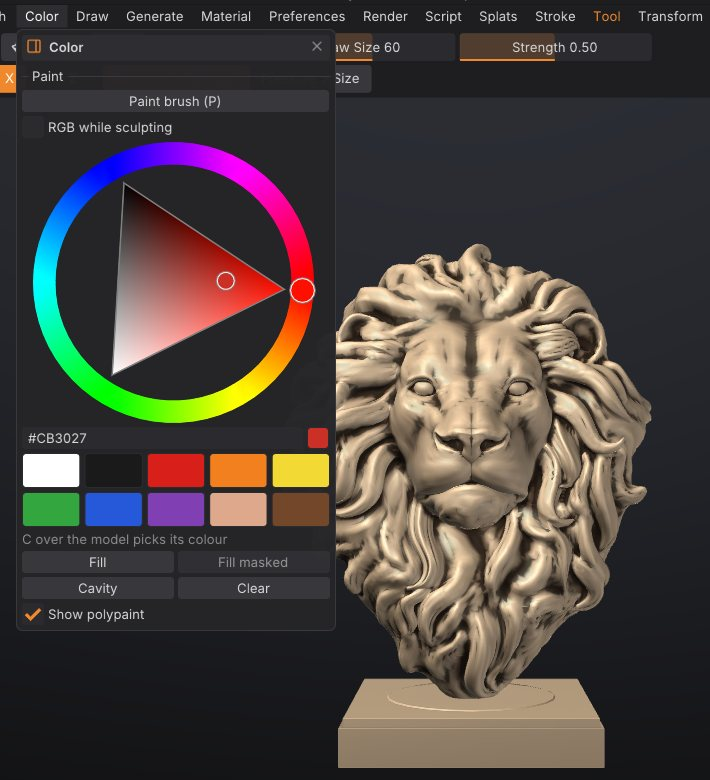
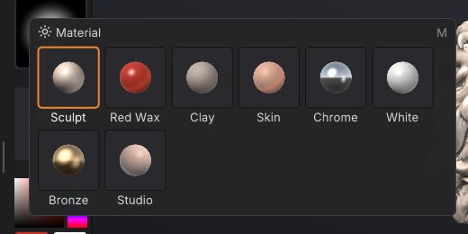

Polypaint and materials
Polypaint stores a colour on every vertex of the mesh, so you can paint a sculpt without UVs or textures, as in ZBrush. This chapter covers the Paint brush, painting while you sculpt, fills and cavity paint, picking colours, paint layers with blend modes, and the MatCap materials that change how the model is shaded in the viewport.
How polypaint works#
- Colour is stored per vertex. The detail you can paint is limited by how dense the mesh is: on a light mesh, colour edges look soft. Subdivide or remesh at a higher resolution before fine painting.
- Painting respects the mask (masked areas keep their colour) and skips hidden faces.
- Symmetry works for painting as it does for sculpting.
-
Polypaint is per SubTool and is saved in projects. It is exported as vertex colours to PLY, glTF/GLB, OBJ, USD (
displayColor) and GoZ. FBX export doesn't include it. - A mesh starts without polypaint. The first paint stroke or fill adds it (white everywhere you haven't painted).
Paint with the Paint brush#
- Press P, click Paint on the top shelf, or pick Paint on the bottom shelf.
- Choose a colour (see below).
- Stroke over the model. Draw Size, the stroke type and the alpha work as they do for sculpting; RGB Intensity (I) sets how strongly the colour goes on.
While the Paint brush is active:
- Alt paints back towards white.
- Shift still smooths the shape, as in ZBrush.
- The surface isn't changed.
Press P again, or click Sculpt on the top shelf, to go back to sculpting.


Paint while sculpting#
Turn on Rgb on the top shelf (or RGB while sculpting in the Color palette). Every sculpt brush then also paints the current colour along its stroke. The Smooth brush and Shift-smoothing never paint.
Choose a colour#
- The left shelf has a colour picker (a square plus a hue strip), two swatches and a Fill button. Clicking the second swatch swaps it with the main colour, like ZBrush's Alternate.
- The Color palette has a larger hue wheel with a hex value, ten preset swatches (white, near black, red, orange, yellow, green, blue, purple, skin and brown) and the fill buttons.
- Press C with the cursor over the model to pick the colour under it (the mesh needs polypaint for this, or a texture while painting into the texture).
Fill, cavity paint and clear#
The Color palette has four buttons:
| Button | What it does |
|---|---|
| Fill | Fills the unmasked area with the colour (the whole mesh when nothing is masked). Same as Fill on the left shelf |
| Fill masked | Fills only the masked area. Available when the mesh has a mask |
| Cavity | Darkens the creases and cavities with a dark brown, respecting the mask. A quick way to bring out detail |
| Clear | Removes all polypaint from the active SubTool |
All of them are undoable. Show polypaint in the same palette (or Paint on the right shelf) turns the colours off in the viewport without deleting them.
Paint layers#
Paint layers stack polypaint the way Photoshop stacks image layers. Each layer has its own name, visibility, opacity and blend mode, so you can paint dirt on a Multiply layer, glow on a Screen layer or tint on an Overlay layer, then change or hide it later without repainting the rest. Every SubTool has its own stack.

How paint layers work#
- Base is the bottom layer: the SubTool's polypaint, always opaque. With only Base, polypaint works exactly as it did before, and nothing changes in your files.
- Layers above Base start transparent. Painting on a layer adds colour and coverage: where you haven't painted, the layer is see-through. Painting never touches the layers you aren't on.
- What you see, and what every export writes, is the stack composited from Base up: each visible layer blends its colour over the result below with its blend mode, scaled by its coverage and opacity.
- Blending happens on display colours, like Photoshop, so the modes behave as Photoshop users expect: 50% grey on an Overlay or Soft Light layer changes nothing, white on Multiply changes nothing, black on Screen changes nothing.
- The Paint brush, Rgb while sculpting, Fill, Fill masked and Cavity all write into the active layer (highlighted in the list; the Color palette shows "Painting on: ..."). They respect the mask and hidden faces on every layer.
- With the Paint brush on a layer, Alt erases the layer's paint (on Base it paints back towards white, as before).
- A hidden or locked layer can't be painted, filled or cleared; the status line says why.
Blend modes#
| Mode | Effect |
|---|---|
| Normal | The layer's colour covers what is below |
| Multiply | Darkens: dirt, shadows, cavity grime. White does nothing |
| Screen | Lightens: highlights, glow, dust. Black does nothing |
| Overlay | Adds contrast and tints the midtones. 50% grey does nothing |
| Soft Light | A gentler Overlay, good for skin tints and colour variation |
| Add | Adds the colours (Photoshop's Linear Dodge); strong highlights |
| Subtract | Subtracts the layer's colour |
| Darken / Lighten | Keeps the darker / lighter colour, channel by channel |
| Difference | The difference between the colours; useful for checking two paint passes against each other |
The Paint Layers sub-palette#
Open Tool > Paint Layers in the right tray (it sits under the sculpt Layers sub-palette). The list shows the layers top first, with Base at the bottom, like Photoshop's Layers panel. Each row has the name, the blend mode and opacity, a lock and an eye.
- Click a row to paint on that layer. Double-click it to rename. Right-click for Rename, Duplicate, Merge down, Clear and Delete.
- The eye shows or hides the layer; the lock protects it from painting, fills, clears and merges.
- Under the list: the active layer's blend mode and Opacity slider. The opacity previews live while you drag and is one undo step when you let go.
- New adds a transparent layer above the active one. Duplicate copies the active layer (Base becomes an opaque layer). Delete removes the active layer.
- The arrows move the active layer up or down. Merge down merges it into the layer below (into Base for the lowest layer). Flatten bakes every visible layer into Base and removes the layers; hidden layers are discarded.
- Clear layer makes the active layer transparent again (Base: white). Fill layer fills it with the current colour, like Fill in the Color palette.
Hold Ctrl over any control for its description. Every action is undoable with Ctrl+Z.
Paint layers and sculpt layers#
They are separate stacks. Tool > Layers holds sculpt layers: shape changes exported as blend shapes. Tool > Paint Layers holds colour. Selecting a sculpt layer doesn't change the paint layer you paint on, and the other way round, so a stroke with Rgb on can sculpt into the "Smile" layer and paint into the "Blush" layer at once.
Files, SubTools and geometry#
-
Paint layers are saved in projects (
.sfproj) with their names, blend modes, opacity, visibility, lock and the active layer. Older versions of SculptForge open these projects with the paint flattened. - Exports (OBJ, PLY, glTF/GLB, USD, GoZ) write the composited colours, exactly what the viewport shows.
- Duplicating a SubTool copies its layers, and Split keeps them on each piece. Subdividing and decimating keep them too.
- Merging SubTools, a voxel remesh and other rebuilds keep the look but flatten the layers into Base.
Materials (MatCaps)#
Materials change only how the model is shaded in the viewport. They aren't exported and don't change polypaint.
| Material | Look |
|---|---|
| Sculpt | The default, made for sculpting: neutral warm clay under a strong key light from the upper left, a crisp highlight and deep cavity shading, so small strokes and undulations stay readable |
| Red Wax | Glossy deep red wax, the classic sculpting look |
| Clay | Matte grey-brown clay |
| Skin | Warm, soft skin tones |
| Chrome | Mirror-like metal, good for checking surface flow |
| White | Neutral off-white for judging forms |
| Bronze | Polished bronze |
| Studio | Softer clay shading with studio lighting (the default in earlier versions). Its colour is Base colour in the Material palette |
To choose one:
- Press M for the material picker under the cursor, or click the Material tile on the left shelf. Point at a material to preview it on the model, click to keep it. Esc or clicking away puts the previous material back.
- Open the Material palette, or the Material tab of the LightBox.


Polypaint multiplies the material, and cavity shading stays on with every material (strongest with Sculpt). The material is saved with the project: projects saved with Studio open with Studio.
Scripting#
| Command | What it does |
|---|---|
set_color color=#c08060 | Set the paint colour: rrggbb, #rrggbb (quote it in scripts), r,g,b or a name such as white, skin, bone |
paint_fill area=unmasked | Fill; area is unmasked (default), masked or all; strength 0-1 |
paint_from_cavity color=#202020 strength=0.7 smoothing=2 | Cavity paint (defaults: dark brown, 0.7, 2 blur passes) |
paint_clear | Remove all polypaint, paint layers included |
paint_layer_add name=Dirt blend=multiply opacity=0.8 | Add a paint layer above the active one and paint on it |
paint_layer_set index=0 opacity=0.5 blend=overlay visible=false locked=true name=Grime | Change a layer (layer=Dirt picks it by name; default: the active layer) |
paint_layer_select layer=Base | Paint on another layer (index=-1 is Base, 0 the first layer above it) |
paint_layer_duplicate, paint_layer_delete, paint_layer_clear | Copy, delete or clear the active (or given) layer |
paint_layer_move direction=up | Move a layer up or down the stack |
paint_layer_merge / paint_layer_flatten | Merge down / bake every visible layer into Base |
paint_layer_list | List the layers, top first (* marks the active one) |
set_material name=Chrome | Viewport material: a MatCap name (Sculpt is the default) or studio (desktop app only) |
set_color color="#d9b38c"; paint_fill; paint_from_cavity strength=0.5
paint_layer_add name=Dirt blend=multiply opacity=0.8; paint_from_cavity color=4a2c18 strength=0.9See also#
- Masking: protect areas from painting
- Sculpt layers and blend shapes: the shape counterpart of paint layers
- Sculpting and brushes: Draw Size, Focal Shift, strokes and alphas also apply to painting
- Exporting: which formats carry vertex colours